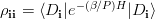
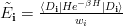

RHOPII¶
RHOPII is produced during the calculation of a vertex sum. It contains:
Index Determinant=Di w_i P ln rho_ii ln s_i E~_i Degeneracy
where:
Index begins at 0.
Note
This is not true for the test jobs which are not model systems. What does Index mean?
Determinant is formed by the list of spin-obitals enclosed in parentheses.
w_i is the calcuated value of math:w_{veci}=bra D_{veci} | e^{-beta H} | D_{veci} ket.
P ln rho_ii is formed by P, the path length, and rho_ii is  calculaed to the approximation specified by the input parameters.
s_i is defined from
.
E~_i is the value of .